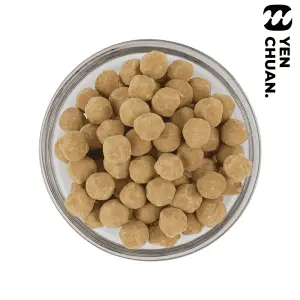
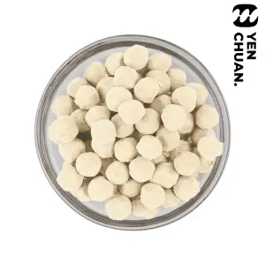

全部商品
乾燥、冷凍與即食珍珠，台灣製造。歡迎詢問最低訂量、交期與運送。


詢價
English · 繁體中文 · Español · العربية
示範用中文頁面；商品名稱暫用英文。
 Long-lasting tapioca pearls
Long-lasting tapioca pearls Instant tapioca pearls (room temperature)
Instant tapioca pearls (room temperature) Frozen dried tapioca pearls
Frozen dried tapioca pearls Dried black tapioca pearls
Dried black tapioca pearls